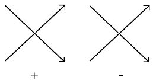
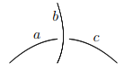

|
Knots and Quandles
Sub-package by Cédric FRAGNAUD and Graham ELLIS |
A quandle (Q, ▹)
is a
non-empty set Q equipped with a binary operation ▹ : Q × Q → Q
satisfying the following axioms:
1) ∀ a ∈ Q, a ▹ a = a.
2) ∀ a, b ∈ Q, ∃! c ∈ Q such that a = c ▹ b.
3) ∀ a, b, c ∈ Q, (a ▹ b) ▹ c = (a ▹ c) ▹ (b ▹ c).
One can check that for any group G and n ∈ ℤ, the magma (G, ▹) forms a
quandle with the operation x ▹ y = y-nxyn , ∀ x,
y ∈ G. Such a quandle is called the n-Fold Conjugation Quandle.
A quandle Q is said to be connected if the
inner automorphism
group Inn Q acts transitively on Q. In other words,
Q is connected if and only if for each pair a, b
in Q there are a1, a2, . . . , an
in Q such that a ▹ a1 ▹· · · ▹ an = b.
A quandle Q is said to be latin if ∀ a, b
∈ Q, ∃ c ∈
Q such that a = b ▹ c. |
gap>
Q:=Quandle(5,21);
<magma with 5 generators>
gap> Display(MultiplicationTable(Q));
[ [ 1, 3, 4, 5, 2 ],
[ 3, 2, 5, 1, 4 ],
[ 4, 5, 3, 2, 1 ],
[ 5, 1, 2, 4, 3 ],
[ 2, 4, 1, 3, 5 ] ]
gap> IsConnected(Q);
true
gap> IsLatinQuandle(Q);
true
|
gap>
G:=DihedralGroup(64);;
gap> Q:=ConjugationQuandle(G,1);;
<magma with 19 generators>
gap> Size(Q);
64
gap> IsConnected(Q);
false |
The
following command uses a "brute force" approach to constructing a list
of all quandles of size 6. There are a total of 73 such quandles, of
which 2 are connected and 0 are latin.
|
gap>
L:=Quandles(6);;
gap> Length(L);
73
gap> Length(Filtered(L,IsConnected));
2
gap> Length(Filtered(L,IsLatinQuandle));
0
|
Let Q be a set, e an
element in Q, G a permutation group, and µ an element in G.
Then (Q,G,e,µ) describes a Quandle Envelope
if :
- G is a transitive group on Q.
- µ ∈ Z(Ge), the center of the
stabilizer of e.
- ⟨µG⟩ = G (that is, the smallest
normal subgroup of G containing µ is all of G).
From a Quandle Envelope
(Q,G,e,µ), we can construct a Quandle (Q, ▹):
for
all
x,y
in
Q,
x
▹
y=(ŷ(µ))(x)
,
where
ŷ
∈
G
satisfies
ŷ(e)=y.
Such a quandle
is connected. This property is used to construct all the connected
quandles of size n.
|
gap>
Q:=[1..9];; e:=2;; G:=TransitiveGroup(9,15);; mu:=(1,8,7,4,9,5,3,6);;
gap> IsQuandleEnvelope(Q,G,e,mu);
true
gap> QE:=QuandleQuandleEnvelope(Q,G,e,mu);
<magma with 9 generators>
gap> IsQuandle(QE);
true
gap> IsConnected(QE);
true
gap> ConnectedQuandles(30);
[ <magma with 30 generators>, <magma with 30 generators>,
<magma with 30 generators>, <magma with 30
generators>,
<magma with 30 generators>, <magma with 30
generators>,
<magma with 30 generators>, <magma with 30
generators>,
<magma with 30 generators>, <magma with 30
generators>,
<magma with 30 generators>, <magma with 30
generators>,
<magma with 30 generators>, <magma with 30
generators>,
<magma with 30 generators>, <magma with 30
generators>,
<magma with 30 generators>, <magma with 30
generators>,
<magma with 30 generators>, <magma with 30
generators>,
<magma with 30 generators>, <magma with 30
generators>,
<magma with 30 generators>, <magma with 30
generators> ]
gap> time;
111979
|
The
following commands illustrate how to find the identification number of
a connected quandle.
|
gap>
Q:=ConjugationQuandle(SymmetricGroup(5),1);;
gap> P:=PathComponents(Q);;
gap> P:=List(P,x->AsMagma(x));;
gap> List(P,IsConnected);
[ true, true, true, true, true, true, false ]
gap> IdConnectedQuandle(P[5]);
[ 30, 17 ]
|
Let Rx
denote the mapping Rx : Q→Q, y ↦y▹x.
We define the right
multiplication
group of a quandle Q to be the group G=〈Rx,
x
∈ Q〉. This group is also called the inner automorphism group
of Q.
We define the automorphism
group Aut(Q)={f:Q→Q} to be the group of bijective quandle
homomorphisms. It can be shown that the inner automorphism group
G is a subgroup of Aut(Q). |
gap>
Q:=ConnectedQuandle(8,2);; q:=Random(Q);
m6
gap> A:=AutomorphismGroupQuandle(Q);; a:=Random(A);;
gap> q^a;
m4
gap> R:=RightMultiplicationGroupOfQuandle(Q);; r:=Random(R);;
gap> q^r;
m3 |
A knot
is an embedding of the circle S1 in ℝ3.
To study knots we use knot diagrams --
which are projections
of knots into ℝ2, defined, for instance, by f : ℝ3
→ ℝ2; (x,y,z) → (x,y) subject to the
constraint that the preimage of any (x, y) ∈ ℝ2 contains at
most two points.
Crossing
points occur when the preimage of a point in ℝ2
contains more than one point.
At these crossing points, we denote the point in the preimage that is
nearer to the ℝ2 plane as the under-crossing
point and the
point farther away as the over-crossing
point. An arc is a line that
connects two crossing points in the knot diagram, with a line break
occurring when an undercrossing point is mapped to the arc.
We may give a knot diagram an orientation,
i.e. a direction of
travelling around the knot. This allows us to categorize crossings as
either positive or negative:

There exists different ways to describe a knot diagram: Planar Diagram,
Gauss Code, Dowker Notation, Conway Notation.
|
Another
way
to
describe
a
knot
is
to
use
quandles.
From
a
knot
K,
we
can
construct
the
knot
quandle
Q(K),
whose
generators
are the arcs of
K, and relations are associated to the crossings:

This figure gives us "a ▹ b = c" at a negative crossing, and "a ▹ -1
b = c" (or "c ▹ b = a") at a positive one.
|
gap>
K:=PureCubicalKnot(3,1);;
gap> G:=GaussCodeOfPureCubicalKnot(K);;
gap> P:=PresentationKnotQuandle(G);
Quandle presentation of 3 generators and 3 relators.
gap> P!.generators;
[ 1 .. 3 ]
gap> P!.relators;
[ [ [ 3, 2 ], 1 ], [ [ 1, 3 ], 2 ], [ [ 2, 1 ], 3 ] ]
|
From this example, we
see that the generators of the Trefoil Knot Quandle are the arcs 1, 2
and 3; these generators satisfy the relations above.
Nb: [[a1 ,a2 ],a3 ]
means a1 ▹ a2 = a3, no matter if we
consider a positive or negative crossing. |
| We
can
also
easily
go
from
a
Planar
Diagram
representation
of
a
knot
to
a
its
Gauss
Code
(with
orientations
of
crossings). |
gap>
PD:=PlanarDiagramKnot(3,1);
[ [ 1, 4, 2, 5 ], [ 3, 6, 4, 1 ], [ 5, 2, 6, 3 ] ]
gap> G:=PD2GC(PD);
[ [ [ -1, 3, -2, 1, -3, 2 ] ], [ -1, -1, -1 ] ]
|
Using
a
finite
connected
quandle
Q
we
can
construct
an
invariant
of
a
knot
K:
the
number
of
homomorphisms
QK ---> Q from the fundamental quandle QK
of K to the quandle Q.
|
gap>
QK:=PresentationKnotQuandleKnot(12,1000);
Quandle presentation of 12 generators and 12 relators.
gap> Q:=ConnectedQuandle(30,2);;
gap> NumberOfHomomorphisms(QK,Q);
1230
|
For
the same knot K (knot 1000 in the list of 12 crossing prime knots) we
can compute the knot group W, the inner automorphism group RQ of the
connected quandle Q of order 30, and the number of group homomorphisms
W ---> RQ. This number is also an invariant of the knot.
|
gap>
RQ:=RightMultiplicationGroupOfQuandleAsPerm(Q);;
gap> Order(RQ);
600
gap> PD:=PlanarDiagramKnot(12,1000);;
gap> G:=PD2GC(PD);;
gap> W:=SimplifiedFpGroup(WirtingerGroup(G));;
gap> NumberOfHomomorphisms(W,RQ);
13200
|
| The following code
shows how a partition of the number of homomorphisms K--->Q from a
knot quandle K to a finite quandle Q can be used to distinguish between
knots. The code establishes that by using only connected quandles Q of
order ≤13, one can distinguish between all prime knots on at most eight
crossings. |
gap>
L:=[];;
gap> for n in [1..8] do
> for i in [1..NumberOfPrimeKnots(n)] do
> Add(L,PresentationKnotQuandleKnot(n,i));
> od; od;
gap> inv:=function(K,n);
> return
List(ConnectedQuandles(n),x->PartitionedNumberOfHomomorphisms(K,x));
> end;;
gap> C:=Classify(L,K->inv(K,3));; List(C,Size);
[ 11, 23, 1 ]
gap> C4:=RefineClassification(C,K->inv(K,4));; List(C4,Size);
[ 8, 3, 6, 17, 1 ]
gap> C5:=RefineClassification(C4,K->inv(K,5));; List(C5,Size);
[ 5, 2, 1, 1, 1, 1, 1, 1, 4, 3, 12, 1, 1, 1 ]
gap> C6:=RefineClassification(C5,K->inv(K,5));; List(C6,Size);
[ 1, 4, 1, 1, 1, 1, 1, 1, 1, 1, 4, 3, 12, 1, 1, 1 ]
gap> C7:=RefineClassification(C6,K->inv(K,7));; List(C7,Size);
[ 1, 1, 3, 1, 1, 1, 1, 1, 1, 1, 1, 4, 1, 1, 1, 2, 8, 2, 1, 1, 1 ]
gap> C8:=RefineClassification(C7,K->inv(K,8));; List(C8,Size);
[ 1, 1, 3, 1, 1, 1, 1, 1, 1, 1, 1, 4, 1, 1, 1, 1, 1, 6, 2, 2, 1, 1, 1 ]
gap> C9:=RefineClassification(C8,K->inv(K,9));; List(C9,Size);
[ 1, 1, 1, 1, 1, 1, 1, 1, 1, 1, 1, 1, 1, 1, 3, 1, 1, 1, 1, 1, 1, 3, 2,
1, 1, 1, 1, 1, 1, 1 ]
gap> C10:=RefineClassification(C9,K->inv(K,10));; List(C10,Size);
[ 1, 1, 1, 1, 1, 1, 1, 1, 1, 1, 1, 1, 1, 1, 3, 1, 1, 1, 1, 1, 1, 3, 2,
1, 1, 1, 1, 1, 1, 1 ]
gap> C11:=RefineClassification(C10,K->inv(K,11));; List(C11,Size);
[ 1, 1, 1, 1, 1, 1, 1, 1, 1, 1, 1, 1, 1, 1, 2, 1, 1, 1, 1, 1, 1, 1, 2,
1, 1, 1, 1, 1, 1, 1, 1, 1, 1 ]
gap> C12:=RefineClassification(C11,K->inv(K,12));; List(C12,Size);
[ 1, 1, 1, 1, 1, 1, 1, 1, 1, 1, 1, 1, 1, 1, 2, 1, 1, 1, 1, 1, 1, 1, 1,
1, 1, 1, 1, 1, 1, 1, 1, 1, 1, 1 ]
gap> C13:=RefineClassification(C12,K->inv(K,13));; List(C13,Size);
[ 1, 1, 1, 1, 1, 1, 1, 1, 1, 1, 1, 1, 1, 1, 1, 1, 1, 1, 1, 1, 1, 1, 1,
1, 1, 1, 1, 1, 1, 1, 1, 1, 1, 1, 1 ] |
Given a
quandle Q one defines the adjoint group
Adj(Q) to be the group with one generator for each element of Q and
relators
x-1yx= x▹y
for x,y ∈ Q.
|
Q:=ConnectedQuandle(7,1);
<magma with 7 generators>
gap> F:=AdjointGroupOfQuandle(Q);
<fp group on the generators [ f1, f2, f3, f4, f5, f6, f7 ]>
|
The
set of
path
components of a quandle Q is defined to be the set of orbits of
the action of the right multiplication group Inn(Q) on Q. One can
readily see that the rank of the abelianization of Adj(Q) is equal to
the number of path components. The following code illustrates this.
|
gap>
Q:=ConjugationQuandle(SymmetricGroup(5),1);
<magma with 10 generators>
gap> F:=AdjointGroupOfQuandle(Q);
<fp group with 120 generators>
gap> AbelianInvariants(F);
[ 0, 0, 0, 0, 0, 0, 0 ]
gap> P:=PathComponents(Q);;
gap> Size(P);
7
|
For
a connected quandle Q the
group A=Adj(Q) is isomorphic to a semi-direct
product A=Z ⋊ D where D is the derived subgroup of Adj(Q) and Z is the
infinite cylic group. There is a canonical group homomorphism Adj(Q)
--> Inn(Q) to the right multiplication group. Thus Adj(Q) acts
canonically on Q.
For a connected Q and preferred element q ∈ Q the fundamental group
of Q at the base-point
q is defined to be the subgroup of D consisting of those elements that
fix q. Up to isomorphism the fundamental group of Q does not depend on
the choice of base-point.
When Q is finite then so too is D. Thus for finite connected
quandles one can compute the fundamental group directly from the
definition.
|
gap>
Q:=ConnectedQuandle(18,2);
<magma with 18 generators>
gap> F:=FundamentalGroup(Q);
<group with 2 generators>
gap> IdGroup(F);
[ 4, 1 ]
gap> D:=DerivedGroupOfQuandle(Q);
<group with 2 generators>
gap> IdGroup(D);
[ 72, 3 ]
|
A
second example of a fundamental group computation is given below.
|
gap>
Q:=ConjugationQuandle(SymmetricGroup(5),1);
<magma with 10 generators>
gap> P:=PathComponents(Q);;
gap> P:=List(P,x->AsMagma(x));;
gap> List(P,Size);
[ 1, 10, 20, 15, 30, 20, 24 ]
gap> List(P,IsConnected);
[ true, true, true, true, true, true, false ]
gap> Q:=P[5];
<magma with 3 generators>
gap> Size(Q);
30
gap> F:=FundamentalGroup(Q);
<group with 2 generators>
gap> IdGroup(F);
[ 4, 1 ]
gap>
|
|
{kind=link}